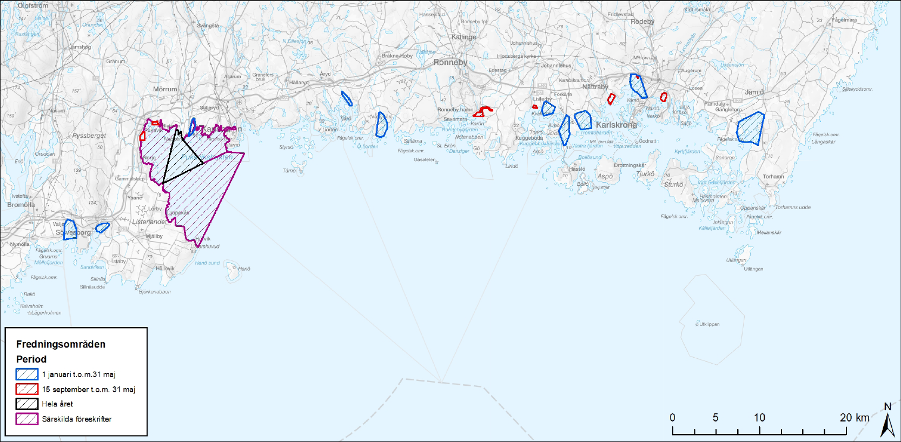
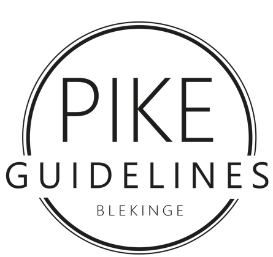

Fredningsområden

Under Blekinge Gäddfestival gäller samtliga fredningsområden som är fastställda av Länsstyrelsen, inklusive de blåmarkerade.
Det är ett gemensamt beslut mellan de lokala tävlingsarrangörerna och länsstyrelsen Blekinge enligt Pike Guidelines Blekinge.

Fredningsområde för gädda (lekvikar)
Förutom nedanstående fredningsområde, även 10 st lekområde med fiskeförbud 1 januari till 31 maj ingår i förbudsområdet för tävlingen. Lokalt placerad längs Blekinge kusten.
Skräbeån
Inom det med rött markerade området råder förbud mot allt fiske under tiden 15 september – 30 april. En liksidig triangel utgående från två punkter på stranden dels en punkt i O där strandlinjen skärs av gränsen mellan skifteslagen Krogstorp och Åby, dels en punkt i V där strandlinjen skärs av sydvästra gränsen till fastigheten Guslöv 5:25.
Östra Orlundsån
I fredningsområdet är allt fiske förbjudet under tiden fr om den 15 september tom den 31 december. Innanför en linje på ett avstånd av 500 m från mittpunkten mellan de två yttersta mynningsuddarna.
Gallerydaån
I fredningsområdet är allt fiske förbjudet under tiden fr om den 15 september tom den 31 december. Innanför en linje på ett avstånd av 500 m från mittpunkten mellan de två yttersta mynningsuddarna.
Mörrumsån
Allt fiske i område A förbjudet.
Bräkneån
I fredningsområdet är allt fiske förbjudet under tiden från den 15 september tom den 31 december. Innanför linjen Klocknabbens sydspets – Rangsös sydspets – Väbynäs.
Ronnebyån
I fredningsområdet är allt fiske förbjudet under tiden fr om den 15 september tom den 31 december. Innanför en linje från Droppemålahalvöns östra spets i rak ostlig riktning till fastlandet vid Aspan.
Listerbyån
I fredningsområdet är allt fiske förbjudet under tiden från den 15 september tom den 31 december. Innanför en linje från småbåtshamnen i Slättanäs till Blötös sydligaste udde.
Nättrabyån
I fredningsområdet är allt fiske förbjudet under tiden fr om den 15 september tom den 31 december. Innanför en linje på ett avstånd av 500 m från mittpunkten mellan de två yttersta mynningsuddarna.
Silletorpsån
I fredningsområdet är allt fiske förbjudet under tiden fr om den 15 september tom den 31 december. Innanför en linje från yttersta delen av bryggan vid Strömshall till sydligaste delen av kronans brygga vid Rosenholmsverkstäderna.
Lyckebyån
I fredningsområdet är allt fiske förbjudet under tiden fr om den 15 september tom den 31 december. Innanför räta linjer från den del av Gullberna udde som ligger närmast ön Mörtekläppen till Mörtekläppens norra udde och därifrån vidare till den udde på Ringö som ligger väster om Ringöviken.